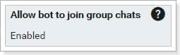

不知道大家有沒有遇過這個情況，被加入群組的Bot不管什麼話都要接一下，實在是讓人煩不甚煩，難道就不能我叫它時它再出現嗎？本篇文章就來玩一下LineBot，順便嘗試解決這個問題。
事前準備
開始寫程式前當然是要先把開發環境建置好，讓LineBot可以順利連到自己的站台，這樣就事半功倍啦！
Messaging API
申請Line開發者帳號後，建立一個Messaging API，未來不排除會使用到推送訊息功能，所以我這邊選擇開發者試用計畫。
將Webhook URL填入自己撰寫的Web API網址，開發時可填入本機IP，完成後推上Server再於此處修改(我這邊使用Heroku)。
設定允許機器人加入群組。

安裝SDK
官方列出了各種語言的開發工具包，沒列在官方的也可以在Github上找到，像我自己平時是寫.NET，官方居然沒有列，可…可惡；回歸正傳，SDK大大減化了開發流程，依據本篇主題，這裡就使用pip把官方推薦的line-bot-sdk裝起來。
1 | $ pip install line-bot-sdk |
測試Web API
把SDK的使用說明看一看，要讓Bot與API溝通應該不是件難事，這裡讓Bot回傳使用者輸入的訊息後，下一步就可以正式開始寫邏輯啦！
呼之即來揮之即去功能
思路大概是這樣子的，Bot預設是不回應請求的，當使用者輸入關鍵字後會啟動Bot，也可輸入關鍵字後關閉Bot，或是於五分鐘後Bot自動關閉。下圖畫的有點醜，大概明白就好。
建立機器人狀態表
因為後端需要判斷Bot所在的群組是否需要回覆訊息，以及目前Bot的狀態，所以這張表需要紀錄的欄位是Line的群組ID、過期時間、建立時間，程式碼大致如下。
1 | class GroupTicket(models.Model): |
建立喚醒與關閉的邏輯判斷
我希望後端在接收到特定關鍵字時能夠有相對應的特殊處理，所以在這裡撰寫程式對機器人出來為喚醒，機器人再見為關閉的條件判斷，並新增或刪除上述的GroupTicket狀態資料，若處在喚醒狀態時，才回傳訊息。
1 | if event.source.type == 'group' and event.message.text == '機器人出來': |
執行結果
現在Bot的開關已經生效，不把它喚醒的話它就只會乖乖地安靜，這樣Bot是不是更好用了呢？
結語
這次的學習Python計劃算是蠻成功的，除了兩篇文章內所提及的東西外還學了很多，例如APIAI做語意分析、Migrate佈署DB，除此之外還嘗試串接了公司內的員工打卡服務，點子雖然源源不絕，但奈何時間有限，就決定到此告一段落，Python 我們下次再見。